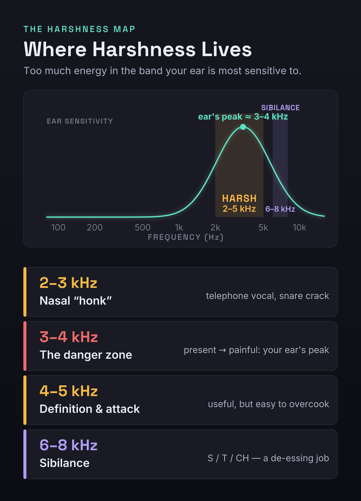
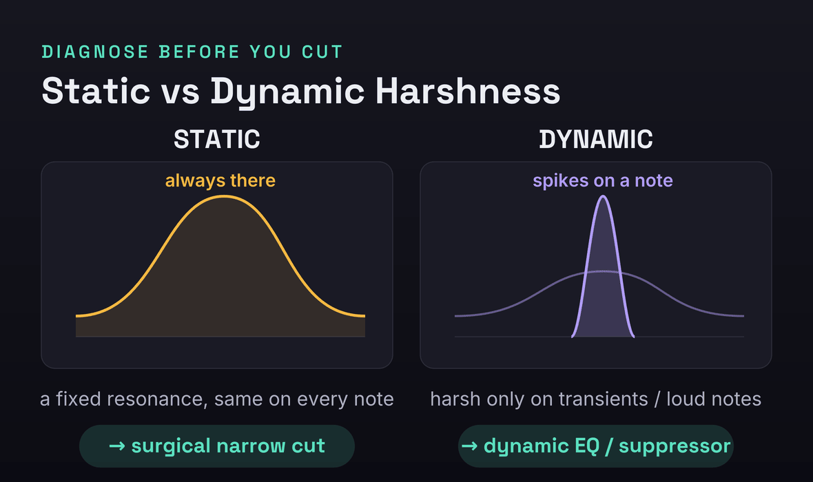
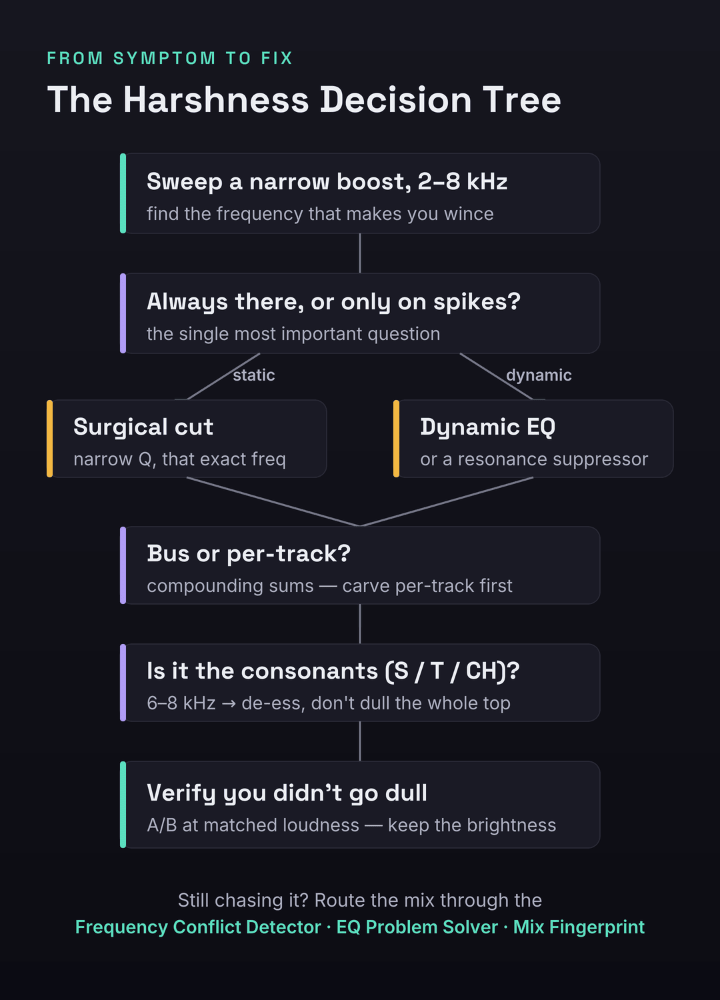

You turn it up because you want to feel it, and within thirty seconds you turn it back down. The cymbals sting, the vocal spits on every s, the whole top end feels like it is pressing on the front of your skull. That is harshness — the brittle, fatiguing edge that makes a mix tiring to listen to and makes people reach for the volume knob in the wrong direction. The good news is the same as it is for mud: harshness is not a curse and it is not a talent gap. It is a diagnosable frequency problem, and it almost always lives in one narrow region of the upper-mids that your ear happens to be built to notice more than any other.
Here is the mechanism in one sentence, because it makes every fix below obvious: harshness is too much energy between roughly 2 and 5 kHz — the presence range — which is precisely the band the human ear is most sensitive to, thanks to the resonance of the ear canal. That sensitivity is why a buildup there hurts in a way the same buildup lower down never would. And there is a second, sneakier half to the mechanism that most articles miss entirely: harshness is usually dynamic and resonant rather than static. It spikes on particular notes and transients, and it compounds across tracks — several sources each carrying a little energy at the same frequency sum into a peak far worse than any one of them looks in solo. Get those two facts straight and you stop reaching blindly for a high-shelf cut that trades the sting for dullness, and start applying the specific tool that removes the pain while keeping the brightness.
A mix sounds harsh when too much energy piles up in the 2–5 kHz presence range — the band your ear is most sensitive to. Find the exact frequency by sweeping a narrow EQ boost through 2–8 kHz until you wince, then decide the one thing that determines the fix: is it always there (static → a surgical narrow cut) or does it spike (dynamic → dynamic EQ or a resonance suppressor)? If it is on the consonants of a vocal, it is sibilance — de-ess it. A wide static cut on the mix bus is the wrong move: it trades harshness for dullness by punishing the good parts to tame the bad ones.
The 30-Second Diagnosis: Find the Frequency Before You Touch Anything
Before you reach for a plugin you need to know where the harshness lives, and the search takes under a minute. Open an EQ on the offending track or the master bus, make a narrow bell with a few dB of boost, and sweep it slowly upward from about 2 kHz to 8 kHz. The frequency that makes you flinch — that makes the mix go from bright to painful — is your problem. Mark it. This is the same search-and-destroy move you use to find mud, just an octave or two higher, and it converts a vague “it sounds harsh” into a specific number you can act on. Most upper-mid harshness clusters between 2.5 and 4 kHz; sibilance and air-related edge tend to sit higher, around 6–8 kHz.
Run two quick confirmations alongside the sweep so you know you are chasing the right thing. First, the volume test: turn the mix up to a properly loud level and listen for about thirty seconds. If it becomes genuinely painful or fatiguing in that window — if you instinctively want to turn it down — you have harshness, not brightness; a merely bright mix gets more exciting when you turn it up, not more punishing. Second, A/B against a reference at matched loudness. Pull in a commercial track in the same genre, level-match it to your mix as closely as you can by ear or with a loudness meter, and switch between them. Harshness reveals itself instantly in that comparison: your mix has a spiky, forward edge where the reference has a smooth, present top. Matching loudness is not optional — the louder of any two tracks always sounds brighter and more exciting, so an un-matched comparison will lie to you every time.
The reason the diagnosis comes first is that harshness has at least three different identities that point at completely different fixes, and the sweep plus these two tests tells them apart. Skip the diagnosis and you will do what most people do: clamp a broad cut somewhere around 3 kHz, lose the life of the mix, and still hear the sting on the loud notes — because the problem was dynamic and a static cut can not catch it. Thirty seconds of looking saves an hour of guessing.
Harsh, Bright, or Sibilant? Three Things People Confuse
“Harsh” gets used for anything with too much top, but three distinct problems hide under the word and they do not share a fix. Confusing them is why people de-ess a mix that has an upper-mid resonance, or cut presence out of a mix that was simply bright and pleasant. Here is how to tell them apart and where each one lives.

Harshness is excess energy in the 2–5 kHz presence range. It is broadband-ish, fatiguing, and forward — the mix feels like it is leaning into your face. Brightness, by contrast, lives higher, mostly above 8 kHz as air and shimmer, and it is frequently desirable — a bright mix can be open and expensive-sounding without ever becoming painful. The classic mistake is to confuse the two and pull down the high shelf to “fix harshness,” which dulls the genuinely useful air while leaving the actual 3 kHz problem untouched. Sibilance is narrower and event-based: the sharp ess, tee, and chuh of a vocal, concentrated around 6–8 kHz, present only when those consonants happen. And one more cousin worth naming because it points the opposite direction entirely: nasal honk, a hollow, telephone-like quality around 2–3 kHz that reads as harsh-adjacent but is really a midrange resonance. The test is simple. If the whole top end is fatiguing and forward, it is harshness in the presence range. If it is exciting rather than painful and lives way up top, it is brightness — leave it. If it only stings on consonants, it is sibilance — de-ess it, do not carve the whole band.
There is one trap so common it deserves its own warning, because it accounts for a huge share of “I de-essed it and it still sounds harsh” complaints. Producers reflexively reach for 7–10 kHz the instant a vocal sounds edgy, because that is where sibilance is “supposed” to be. But a great deal of vocal harshness actually sits lower, in the 3–6 kHz upper-mids — it is presence-range resonance, not sibilance — and de-essing the 7–10 kHz region does nothing but lisp the vocal while the real problem keeps stinging. Always sweep to confirm the actual frequency before you decide whether you are looking at a de-essing job or an upper-mid cut. The band you reach for by reflex is often an octave off the band that is actually hurting.
Why Harshness Compounds — and Why a Bus Cut Backfires
The single most important thing to understand about harshness is that it is usually not static. A static, fixed resonance — a constant peak at the same frequency on every note — does exist, and a single narrow cut solves it cleanly. But most of what people call a harsh mix is dynamic: the edge spikes on specific transients and loud notes and sits politely the rest of the time. A vocal that is smooth on the verse and brittle on the belted chorus note, a snare that cracks harshly only on the hard hits, a guitar that bites on the high chords — these are dynamic harshness, and a static EQ cut deep enough to tame the spikes will gut the body of everything in between.
On top of that, harshness compounds across tracks in a way that makes it far worse than any single source suggests. The presence range is crowded: vocals, snares, hi-hats, distorted guitars, bright synths, and cymbals all carry energy around 3–5 kHz. Each one, soloed, might sound perfectly fine — a reasonable amount of presence. But energy at the same frequency sums, and when six bright sources hit at once, their individual 3 kHz contributions stack into a peak that is genuinely painful even though no single track is the culprit. This is why harshness, like mud, is almost invisible in solo and only exists in the sum. It is also why chasing it on one track at a time can feel like whack-a-mole: you tame the vocal, and the mix is still harsh because the snare and the guitars are still piling into the same band.

Put those two facts together — dynamic and compounding — and you can see why the instinctive fix is the wrong one. The instinct is to slap a wide cut around 3 kHz on the master bus and call it done. But a static, wide cut on the mix bus is always on, even during the quiet passages and the smooth notes where there was no problem, so it trades harshness for dullness: you punish the good parts to tame the bad ones, and the mix loses its presence and life along with its sting. The honest fix respects the structure of the problem. If it is static, cut it surgically and narrowly so you remove only the offending resonance. If it is dynamic, use a tool that acts only when the peak spikes — a dynamic EQ or a resonance suppressor — so the body survives. And because it compounds, you usually carve per-track rather than only on the bus, thinning the presence on the supporting parts and letting the lead element keep its edge. Diagnose static versus dynamic first; everything downstream depends on that one call.
The Causes of Harshness — and the Exact Fix for Each
Harshness is rarely one thing. It is a handful of common habits and conditions that each dump or expose energy in the presence range. Here are the ones that account for nearly every harsh mix, each with the move that addresses it. Most harsh mixes are guilty of three or four at once.
1. Compounding resonance across tracks
As above: several bright sources each contributing a little presence energy sum into a painful peak. The fix is to carve per-track, not just on the bus. Sweep each bright element — vocal, snare, overheads, guitars, lead synth — find its own presence resonance, and pull a modest cut there, deciding which element gets to own the presence band (usually the lead vocal) and thinning the rest. You are making room, the same way you do for mud, just up in the upper-mids. Our mixing EQ guide covers the subtractive, carve-for-space philosophy that this depends on.
2. Over-bright EQ chasing “clarity”
Harshness is very often self-inflicted: a high-shelf boost added to every track to make it “cut,” a presence bump on the vocal, a bright preset on the synth, all stacked. Each boost seems to add clarity in solo; together they pile the presence range sky-high. The fix is the least glamorous and the most effective: back off the boosts. Go through the session and bypass the high-shelf and presence boosts you added reflexively, then add back only what the mix genuinely needs. A mix that needs clarity usually needs less competition in the mids, not more brightness on top.
3. Saturation and distortion artifacts
Saturation, amp sims, and distortion generate harmonics, and a lot of those harmonics land in the presence range — which is exactly why saturation can add bite and excitement. Overdo it, especially with harder clipping or fizzy amp models, and that bite becomes brittle grit. The fix is to tame the saturation at the source: lower the drive, choose a smoother saturation type, or low-pass the output of a distorted source above the useful range to shave the fizz. Note the paradox worth keeping in mind: saturation both causes harshness when overdriven and, used gently with analog-modeled rounding, can actually soften a digital edge — covered more in our guide to using saturation.
4. Mixing too quiet (the equal-loudness trap)
This one surprises people. The ear’s frequency response is not flat, and it changes with level: at low volumes we hear far less low end and, relatively, the mids stick out. So if you mix quietly, you compensate without realizing it — you brighten everything to make it feel full and clear at that low level. Then you turn it up, the equal-loudness curve flattens, and all that added brightness becomes harshness. The fix is to mix at a consistent, moderate level (a conversational level you can talk over is a good anchor) and to check your brightness decisions loud as well as quiet. Harshness decisions made at the wrong monitoring level are simply wrong.
5. Stereo widening exaggerating the highs
Stereo wideners and chorus-style width tricks tend to push high-frequency content out to the sides, which can over-emphasize the presence and air on the widened material and make it feel splashy and harsh, especially on systems that sum toward mono. The fix is to narrow the highs or check in mono: pull back the width on bright material, keep widening to the mid and high-mid content rather than the very top, and verify the mix still sounds smooth when collapsed to mono. If the harshness gets worse as you widen, the widening is the cause.
6. Sibilant vocals
If the harshness is specifically on the consonants — the ess, tee, chuh — that is sibilance, and the fix is a de-esser, not a broadband cut. Done right it removes the spit without dulling the rest of the vocal; done wrong it lisps the singer. The how is its own section below. Our guides to EQ’ing vocals and mixing vocals put de-essing in the context of the whole vocal chain.
7. Mastering and limiting revealing the grit
A limiter or clipper on the master raises everything toward the ceiling and reduces dynamic range, which brings up presence-range energy that was sitting harmlessly underneath and sharpens transients that were previously rounded — so latent harshness becomes audible harshness. The fix is to solve it at the source before the master chain: tame the presence on the individual tracks and the bus so there is less grit for the limiter to expose, and limit more gently. If your mix only sounds harsh after the master limiter goes on, the harshness was in the mix the whole time, hiding under the dynamics.
Dynamic EQ: The Highest-Leverage Fix for Transient Harshness
Because most harshness is dynamic, the single most useful tool for it is the dynamic EQ — an equalizer whose cut only engages when the energy in a band exceeds a threshold, then releases when it drops. That is exactly the behavior the problem demands: it leaves the smooth notes alone and clamps down only on the spikes. Set a band around your identified frequency, choose a moderate Q, and set the threshold so the band cuts a few dB only on the harsh transients — the belted note, the hard snare hit, the bright chord — while staying flat the rest of the time. The result is a vocal that keeps all its presence and body on the verse and only loses its sting on the chorus belt, which is impossible with a static cut.
The advantage over static EQ is the whole point: a static cut deep enough to tame the worst spike is far too deep for everything else, so it dulls the body to fix the edge. A dynamic cut is, in effect, a static cut that is only there when you need it. Dynamic EQ is also the right tool when a single instrument is mostly fine but resonates harshly on a few specific notes — common on resonant acoustic instruments, bright synths, and vocals recorded close. If you are weighing dynamic EQ against multiband compression for this job, our breakdown of dynamic EQ versus multiband compression walks through when each is the cleaner choice, and our guide to using multiband compression covers the band-by-band approach for broader tonal control.
De-Essing Done Right
De-essing is dynamic EQ aimed specifically at sibilance, and most de-essing problems come from using it as a blunt instrument. The first rule is to prefer split-band over broadband. A broadband de-esser ducks the entire signal whenever sibilance is detected, which dulls the vowels and the body of the word along with the ess — it makes the singer sound like they are lisping into a pillow. A split-band de-esser only reduces the high band where the sibilance lives, leaving the rest of the vocal untouched, so the consonant softens but the word keeps its clarity. On modern de-essers, choose the split or “frequency-specific” mode whenever it is offered.
The second rule is to target the right frequency, which loops back to the 3–6 versus 7–10 kHz trap. Solo the de-esser’s detection or listen to the sidechain so you can hear exactly what it is reacting to, and tune the band to the actual sibilant energy — which for many voices and mics sits around 6–8 kHz, but can be lower or higher. Do not assume; listen. And do not over-de-ess: a little reduction on the harshest moments is almost always enough, and chasing every consonant to silence makes a vocal sound unnatural and toothless. The goal is to take the pain off the ess, not to remove the consonant. If after careful de-essing the vocal still feels edgy, the problem was probably presence-range harshness lower down, not sibilance — go back and sweep.
Resonance Suppressors: The Smart Finisher
A resonance suppressor is a specialized, cut-only dynamic processor that listens across the spectrum and pulls down resonant peaks wherever and whenever they spike, automatically, many times a second. It is, in effect, a multiband dynamic EQ with a great many bands and an intelligent detector — perfect for harshness that moves around in frequency or that is spread across a busy source where setting individual dynamic-EQ bands by hand would be tedious. On a stubborn vocal, a bright acoustic guitar, an aggressive synth, or even the mix bus used gently, a suppressor can tame the brittle edge while leaving the body intact, because it only acts on the peaks and only by the amount needed.
It is worth being precise about what these tools do and do not do, because the category divides along an important line. A subtractive dynamic resonance suppressor only cuts — it removes resonant buildups and harshness but never adds — which is the right behavior for taming an edge. A perceptual rebalancer is a different kind of tool that both boosts and cuts to push a mix toward a target balance, which can lift dullness as well as tame harshness but is doing something broader than pure suppression. Knowing which you are reaching for matters: for harshness specifically you usually want the cut-only behavior. Our soothe 3 review, our Gullfoss review, and the head-to-head soothe 3 versus Gullfoss comparison lay out exactly where each fits and which problem each one is actually built to solve — and for the EQs worth owning to do the surgical work by hand, see our roundup of the best EQ plugins and, for broadband noise and harshness reduction, the best noise reduction plugins. A suppressor is a finisher, though, not a substitute for the fundamentals: carving per-track, backing off boosts, and fixing your monitoring do most of the work for free.
Fix Your Monitoring Before You Trust Your Ears
Every harshness decision you make is only as good as what you are hearing, and two monitoring problems make people add or chase harshness that is not really there. The first is level, covered above: mixing too quietly fools you into over-brightening, and a bright untreated nearfield can exaggerate the presence range so that you cut harshness that only your speakers were adding. The second is the room. An untreated room with reflective surfaces builds up and smears high-mid energy unpredictably, so the harshness you hear at the mix position may be partly the room, not the mix — and you will “fix” it by carving presence that the mix actually needed, leaving it dull everywhere else.
The fix is to treat the room and set a consistent level first, then make your harshness calls. Even basic acoustic treatment at the first reflection points tightens the high-mid picture dramatically; our guide to home studio acoustic treatment covers the cheapest high-leverage moves. And because no single system tells the whole truth, check across several — your monitors, your headphones, your phone, the car. Harshness that is present everywhere is real and in the mix; harshness that only appears on one bright system is that system’s coloration, and the fix is to learn your room rather than to carve the mix to satisfy it. If you mix on headphones, our guide to mixing in headphones covers how to compensate for the way cans flatter or exaggerate the top end.
What to Fix First: The Order of Operations
Harshness-taming goes wrong most often not because someone picks the wrong tool but because they pick the right tools in the wrong order — de-essing before they have confirmed the problem is even sibilance, or clamping the bus before carving the tracks. Work in this sequence and each step makes the next one easier to judge. First, fix monitoring and level — treat the worst reflections, settle on a moderate listening level, so you are judging the mix and not the room. Second, identify static versus dynamic by sweeping and listening, because that one call determines every tool choice that follows. Third, surgically cut the fixed resonances — the constant peaks that are the same on every note — with narrow static cuts. Fourth, reach for dynamic EQ or a resonance suppressor for the intermittent, spiking harshness that a static cut can not catch. Fifth, de-ess the sibilance on vocals, split-band and tuned to the real frequency. Then re-check on the mix bus and across systems and decide whether you have gone too far.
That last step is not optional, because over-correction has a signature failure mode of its own: a mix that is no longer harsh but is now dull — lifeless, distant, missing its presence and bite. After every round of taming, A/B against your reference at matched loudness and confirm you still have the brightness and forwardness the genre wants. If your fix made the mix smooth but boring, you cut too much or too broadly; back off, narrow the cuts, and let the dynamic tools do the work only where the problem actually is. The target is not “no presence” — it is presence without pain. A mix that swings from harsh to dull has the same root cause as one that swings from muddy to thin: a blunt, static move where a surgical or dynamic one was needed. If you find yourself there, our companion diagnostics on why your mix sounds muddy and why your mix sounds thin map the opposite ends of the same tonal-balance dial.
Diagnose Your Mix, Not a Generic One
Everything above is the map. The last step is to find your harshness specifically — the exact frequency, the exact offending tracks, whether it is static or dynamic — because a generic “cut 3 kHz” is a starting guess, not a diagnosis. This is where the right tool turns a long session of sweeping into a few seconds of seeing.

Run your mix or a problem stem through the Frequency Conflict Detector to see which elements are stacking energy in the same presence band — it turns the “everything is fighting up top” hunch into a precise picture of where and how much. Use the EQ Problem Solver to translate a symptom — “harsh,” “brittle,” “sibilant” — into the specific band and move that addresses it, and the Frequency EQ Reference to keep the presence and sibilance bands straight as you work. And drop the full mix into the Mix Fingerprint Analyzer for a complete read on your tonal balance against genre-calibrated targets — it flags the band where your mix departs from a clean reference, so you know whether your presence range really is hot or whether your room was lying to you. The audio never leaves your browser; you just get the diagnosis.
The point of all of it is the same: stop guessing. Harshness feels like a vague, overwhelming “it hurts to listen to,” but it resolves into a small number of specific, fixable causes the moment you look at it with the right tool. When you can name the frequency, decide static or dynamic, and see which tracks are stacking, the fix is almost mechanical — and the mix that stung on the chorus starts to feel present and smooth at any volume.
Before You Touch the EQ: 3 Drills
Run these in order. Each one builds the listening skill that lets you tame harshness by ear instead of by recipe.
- Put a narrow EQ bell with +6 to +10 dB of gain on a harsh element or the master.
- Sweep it slowly from 2 kHz to 8 kHz and stop where it makes you wince — the most painful, forward point.
- Write down that frequency. That is your harshness, and now you know exactly where to act instead of guessing.
- With the cut at your wince frequency, play the whole section and watch when it helps.
- If the mix is improved everywhere and never sounds dull, it was static — a narrow static cut is your fix.
- If the cut helps the loud moments but dulls the quiet ones, it was dynamic — swap the static cut for a dynamic EQ or a resonance suppressor that only acts on the spikes.
- Sweep each bright source — vocal, snare, overheads, guitars, lead synth — and pull a modest presence cut on each, letting the lead element keep the most.
- De-ess the vocal split-band at its real sibilance frequency, a few dB only on the worst consonants.
- A/B against a reference at matched loudness and confirm the mix is smooth and still present — if it went dull, narrow your cuts and let the dynamic tools do the rest.
Frequently Asked Questions
Harshness lives mainly in the presence range, roughly 2–5 kHz, which is the band the human ear is most sensitive to because of ear-canal resonance — that is why a buildup there hurts more than the same energy lower down. Sibilance (the sharp consonants of a vocal) sits higher, around 6–8 kHz. The exact frequency varies by mix, which is why you sweep a narrow EQ boost through 2–8 kHz to find your specific peak rather than cutting a fixed number.
Because the harshness is dynamic, not static — it spikes on the loud, dense moments. A belted vocal note, harder-hit drums, and more layers all push more energy into the presence range at once, and that combined peak only crosses into painful on the chorus. A static EQ cut deep enough to tame the chorus would dull the verse, so the right fix is a dynamic EQ or a resonance suppressor that only engages when the peak actually spikes.
Use a de-esser when the problem is specifically vocal sibilance, the sharp ess/tee/chuh around 6–8 kHz; a split-band de-esser ducks only that high band so the rest of the vocal stays clear. Use a dynamic EQ for harshness that is in the presence range (2–5 kHz) or on non-vocal sources, or when the edge is on the vowels and body rather than just the consonants. They are closely related — a de-esser is essentially a dynamic EQ tuned to sibilance — so the choice comes down to where the energy actually is. Sweep first to find out.
A master limiter or clipper raises everything toward the ceiling and reduces dynamic range, which brings up presence-range energy that was sitting harmlessly underneath and sharpens transients that were previously rounded — so latent harshness becomes audible. The fix is to tame the harshness in the mix before the master chain, so there is less grit for the limiter to expose, and to limit more gently. If your mix only sounds harsh after the limiter, the harshness was in the mix the whole time.
A cut-only dynamic resonance suppressor is excellent on stubborn, moving harshness — a bright vocal, an aggressive synth, or the bus used gently — because it pulls down resonant peaks automatically and only by the amount needed, leaving the body intact. But it is a finisher, not a substitute for the fundamentals: carving per-track, backing off reflexive boosts, and fixing your monitoring do most of the work for free. See our soothe 3 and Gullfoss reviews and the head-to-head comparison for where a paid specialist earns its place and which one suits your problem.
Usually your monitoring is hiding it. An untreated room or a particular pair of headphones can under-represent the presence range, so you mix more brightness in than you realize, and it only shows up as harshness on systems that reproduce 2–5 kHz more honestly — phones, car stereos, cheap earbuds. Treat your first reflection points, set a consistent moderate level, and check your mix across several systems. If harshness appears everywhere it is in the mix; if it only appears on one bright system, learn that system rather than carving the mix to satisfy it.
Cheap digital instruments, hard clipping, and some AI-generated stems carry brittle high-mid grit baked into the sound. Treat them like any other harshness: sweep to find the offending band, then use a narrow static cut for a fixed resonance or a dynamic EQ / resonance suppressor for grit that moves around. A gentle analog-modeled saturation can also help by rounding the hard digital edge — the same saturation that causes harshness when overdriven can soften it when used lightly. Low-passing the very top of an aggressively bright source to shave the fizz often helps too.
Mostly on the tracks. Harshness compounds — several bright sources each contributing a little presence energy stack into the painful peak — so the cleanest fix is to carve per-track, thinning the presence on the supporting elements and letting the lead keep its edge. A wide static cut on the master tames the symptom but dulls the whole mix, because it is always on even during the smooth passages. Use the bus only for a gentle, often dynamic, finishing touch after the tracks are carved.
Less than you think, and narrowly. A few dB — often 2–4 — at the precise frequency, with a moderate-to-narrow Q, usually does it. The most common over-correction is a wide, deep cut that removes the pain but also the presence, leaving the mix dull and distant. Make small, targeted cuts, prefer dynamic cuts that only act on the spikes, and A/B against a reference at matched loudness after each move to confirm you still have brightness. The target is presence without pain, not no presence.
Brightness is generally desirable: open, airy energy mostly above 8 kHz that makes a mix sound expensive and gets more exciting when you turn it up. Harshness is fatiguing: forward, brittle energy in the 2–5 kHz presence range that makes you want to turn the mix down within thirty seconds. The classic mistake is to fix harshness by pulling down the high shelf, which dulls the useful air up top while leaving the real presence-range problem untouched. Diagnose which one you have — the volume test tells them apart — before you reach for an EQ.